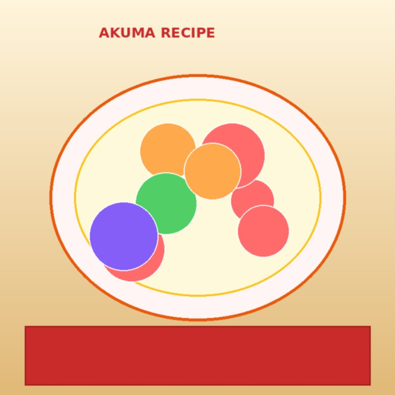
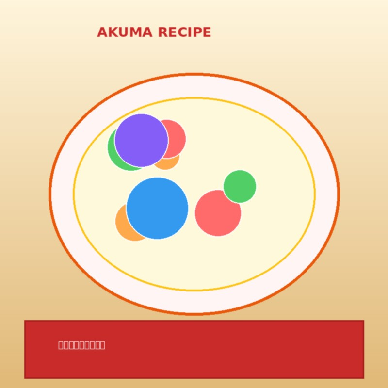
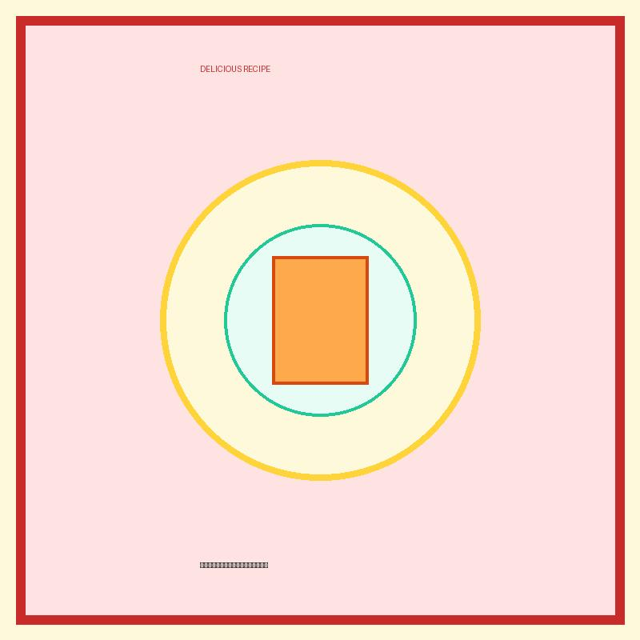
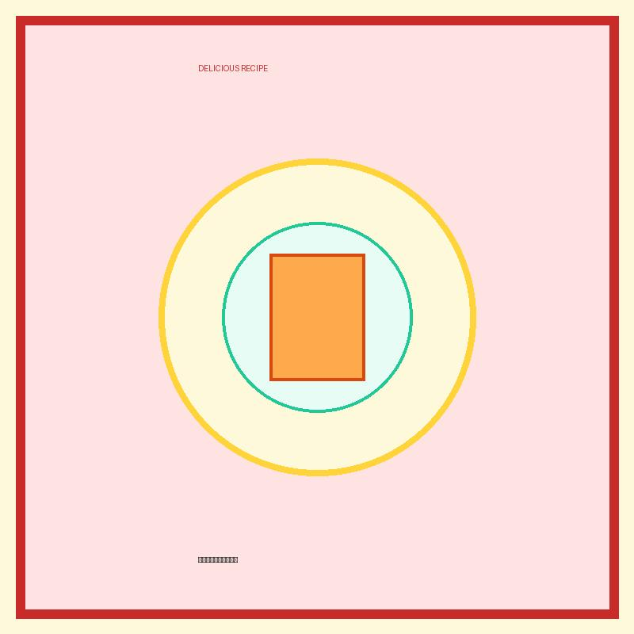

スイーツ


プリン焼きそばプリンフルーツタルト
甘いプリンと香ばしい焼きそばがコラボ！タルト型に焼きそばを詰めてプリンに煮込み、フルーツをトッピング。見た目のインパクトと味の驚きがSNSでバズる一品です。
麺料理
ラムネ冷麺バブルスープ
ラムネのキャンドルを溶かし、冷たい冷麺と組み合わせたアクアリウムのような奇抜スープ！湧き上がる炭酸ラムネの風と、透明な麺のコントラストが写真映え抜群！
麺類
綿あめカレーうどん
ふわふわの甘い綿あめをスパイシーなカレーうどんに溶かして食べる、衝撃の新感覚レシピ！甘みと辛みが絶妙にマッチします。
デザート
板チョコ餃子ドッグ
ジューシーな餃子の皮の中にまるごと板チョコを挟んでパリパリに揚げ焼きした、甘じょっぱさがクセになる悪魔のスイーツおつまみ。
麺類
メロンソーダラーメン
シュワシュワの炭酸メロンソーダと塩ラーメンスープの奇跡のコラボレーション！見た目のインパクトと爽快なのどごしが最高です。
麺類
プリン醤油うどん（ウニ風風）
カスタードプリンに醤油をかけると「ウニ」の味になる！？その噂を本格的なうどんで再現。クリーミーで濃厚なコクがモチモチうどんに絡みます。
おかず
ポテトチップスオムレツ
卵液の中にポテトチップスをそのまま砕き入れてフライパンで丸く焼き上げたスペイン風オムレツ。ポテチの塩気とサクサク感が卵と絶妙にマッチ！
パン類
プリングルズポテトマッシュトースト
砕いたプリングルズをお湯でポテトサラダ風に戻し、チーズと一緒にトーストにのせて焼き上げました。超濃厚なポテチの風味がジュワッと広がります。
デザート
たこ焼きホットケーキ
たこ焼き器を使って丸く作ったベビーカステラ風ホットケーキの中に、本物のタコをイン！ソースの代わりにハチミツをかけて召し上がれ。
おかず
タピオカ麻婆豆腐
辛口の本格麻婆豆腐に、もちもちのブラックタピオカをプラス！噛むたびに楽しい食感と旨辛ダレが最高に絡み合います。